Префектура Ямагата · Каминояма · где остановиться
Рёкан «Мэйгэцусо» в Каминояме: ужин у стойки, каменная ванна с видом на Дзао и советы хозяев
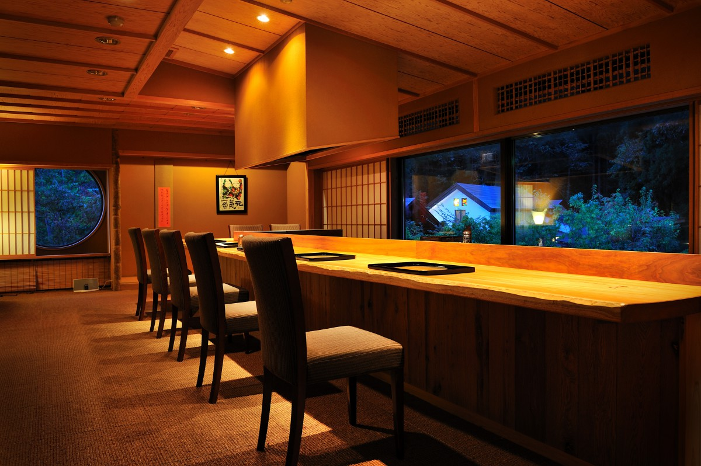
Каминояма, старый призамковый город в префектуре Ямагата, известна как один из главных онсэнов Тохоку. На холме над ней, с видом на хребет Дзао, стоит рёкан «Мэйгэцусо», где ужин можно съесть не только в номере, но и у стойки, как в киотском ресторане.
Рёкан
Гостиница «любования луной»
Каминояма одновременно онсэн и призамковый город. «Мэйгэцусо» стоит на холме, на лучшем месте у подножия гор, откуда открывается хребет Дзао. Название переводится как «усадьба ясной луны», и гостиница действительно задумана как место, где любуются луной. На нынешнем месте рёкан открылся 8 августа 1996 года.
В доме 20 номеров, и каждый устроен по-своему. Номера здесь берут не площадью, а удобством, и в 16 из них есть своя ванна под открытым небом или под навесом. Гостю предлагают выбирать почти всё: ванну в номере или общую купальню, кровать или футон, ужин в номере или у стойки.
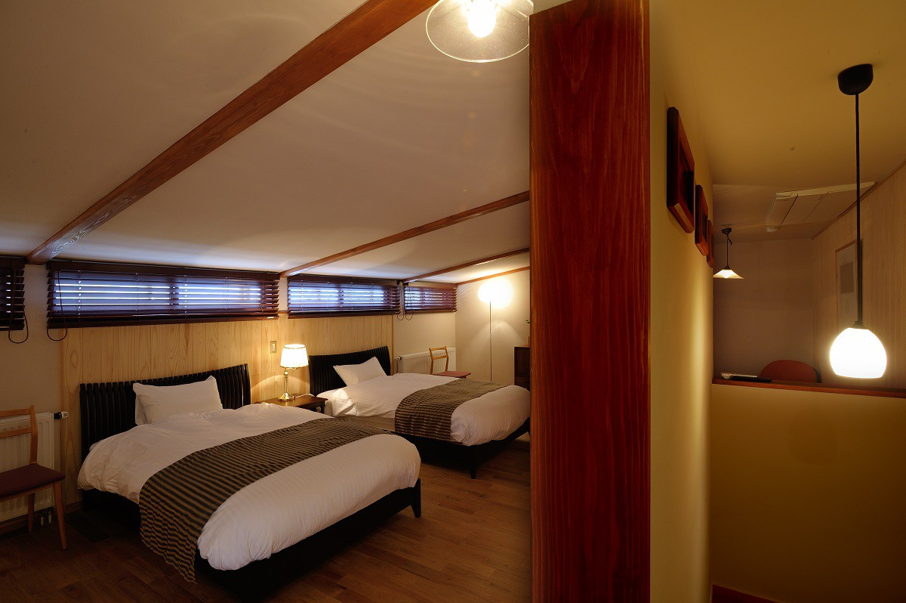
Автор колонки о японских рёканах впервые остановился здесь ещё в конце 1990-х годов, и больше всего его тогда удивили горничные. Винный погреб в японской гостинице в те годы был редкостью, и даже там, где он был, горничные о вине почти ничего не знали. В «Мэйгэцусо» знали. В 2025 году погреб по-прежнему на месте, и гостиница славится и кухней, и винами.
Онсэн
Камень Дзао и вид на горы
Общая купальня отделана кипарисом хиба из Аомори и гранитом. Вода в ней прозрачная, источник Каминоямы натриево-кальциевый хлоридно-сульфатный, и, как говорят, он помогает при порезах и ушибах. Источник подаётся без рециркуляции, но воду подогревают и разбавляют.
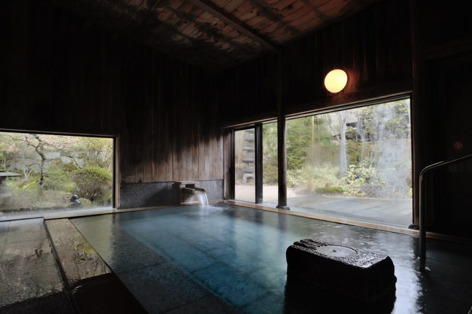
Самое необычное здесь сделано из камня горы Дзао. Частную ванну под открытым небом выдолбили из цельной глыбы: форма у неё неровная, забавная, а из воды виден весь хребет Дзао. Кроме неё есть отдельная семейная купальня и ванна, в которой стоят (зимой её закрывают). Все три бесплатные, бронировать их не нужно: если свободно, просто заходите.
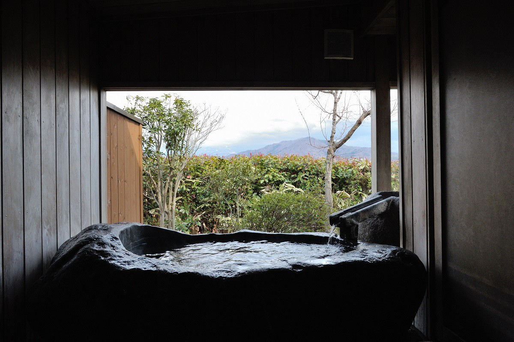
Большая купальня хороша, но в ванне своего номера можно лежать сколько хочется и никого не стесняться. Ветер касается щёк, над садом свежая листва, а пока остываешь после горячей воды, гостиница погружается в сумерки. Пора ужинать.
Ужин
Стойка «Ю»
Еда в японских рёканах часто одинакова. Когда-то стол заставляли таким количеством тарелок, что они не помещались, потом блюда стали приносить по одному, но сами блюда почти не изменились, и по всей стране гостю подают «сезонный обед в киотском стиле». «Мэйгэцусо» пошла другим путём: здесь можно поужинать у стойки «Ю», изящной, как в киотском ресторане кухни каппо, и при этом есть то, что едят в деревнях Ямагаты.
Ужин, который автор колонки описывал в 2019 году, начинался с шампанского. Первой закуской были побеги хосты уруи из Ямагаты и кальмары-светлячки с мисо из белокопытника. Потом подали суп-пюре из белой спаржи, и легко было забыть, что сидишь в онсэне Тохоку.
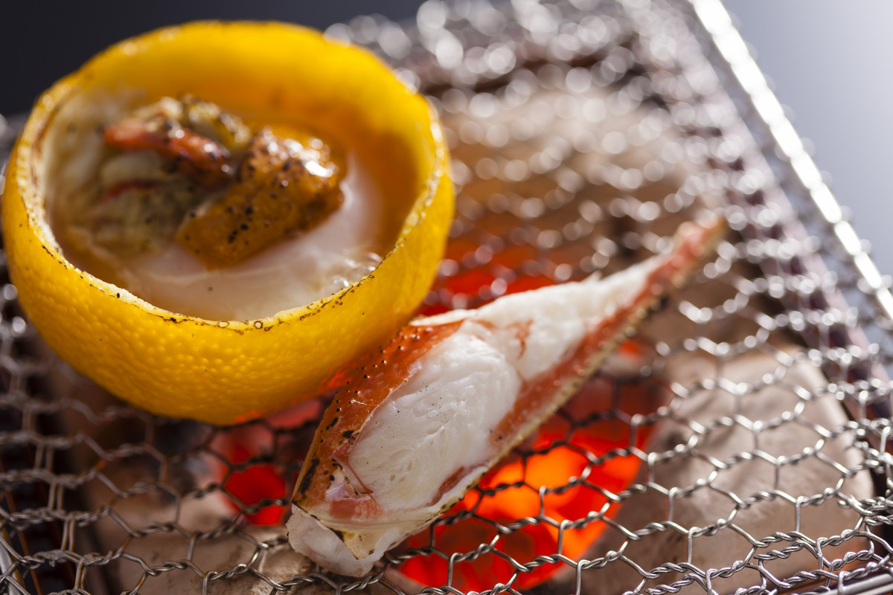
Дальше шли весенний морской лещ сакура-дай, вишнёвый лосось сакура-масу и говядина Ямагаты, а игристое сменило красное вино. Вина Ямагаты очень разные, и сочетать местные продукты с местным вином отдельное удовольствие. Фирменное блюдо гостиницы это стейк из мраморной говядины Ямагаты высшей категории A5, прожаренный так, что середина остаётся розовой.
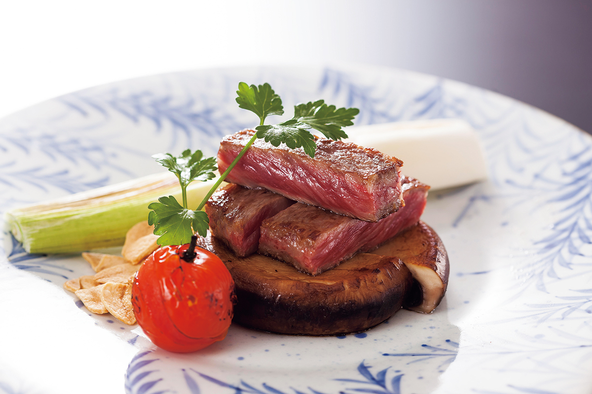
В номер приносят те же блюда, что и к стойке, но атмосфера совсем другая. Если хочется есть не торопясь и совсем расслабившись, выбирайте номер. Если нравится лёгкое напряжение ужина у повара на виду, садитесь за стойку. В 2026 году стойку «Ю» после перерыва готовили к открытию заново: по плану гостиницы, с 30 августа 2026 года она работает 30-го числа каждого месяца.
Говядину можно увезти с собой. Гостиница делает свою приправу для риса: говядину Ямагаты категории A5 долго тушат, и дома её достаточно смешать с рисом при варке.
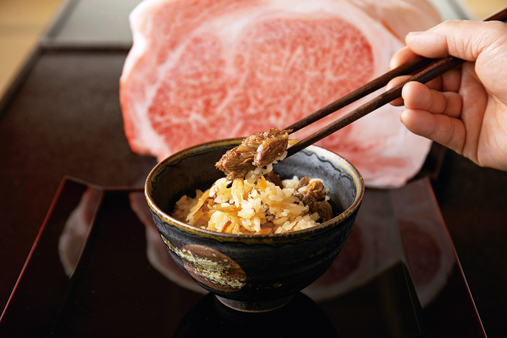
Рёкан «Мэйгэцусо»
- Адрес
- префектура Ямагата, Каминояма, Хаяма, 5-50
- Телефон
- 0120-72-0330 (бесплатный номер, звонки из Японии)
- Номера
- 20, в 16 своя ванна под открытым небом или под навесом
- Цены / Вход
- от 42 350 иен на человека с ужином и завтраком, с налогом и сервисным сбором (2025)
- Заезд / выезд
- 14:00 / 11:30
- Как добраться
- от станции Каминояма-Онсэн около 5 минут на такси; на машине около 20 минут от развязки Ямагата-Каминояма скоростной дороги Тохоку-Тюо
- Сайт
- meigetsuso.co.jp
Советы хозяев
Что ещё попробовать в Каминояме
Хозяева гостиницы хорошо знают округу, и в 2025 году они рассказали, что советуют попробовать и купить гостям.
Вино DROP
В Каминояме есть своя винодельня DROP. Её вина делают из винограда собственного виноградника и окрестных хозяйств, вмешиваясь в брожение как можно меньше и ничего не добавляя. Гостиница советует Vendange Merlot 2023 из мерло Каминоямы: чистый фруктовый вкус и шелковистые танины. При винодельне работает винный бар, где большой выбор натуральных вин и крафтового пива. Говорят, кто заходит туда до или после ужина, почти всегда выпивает больше, чем собирался.
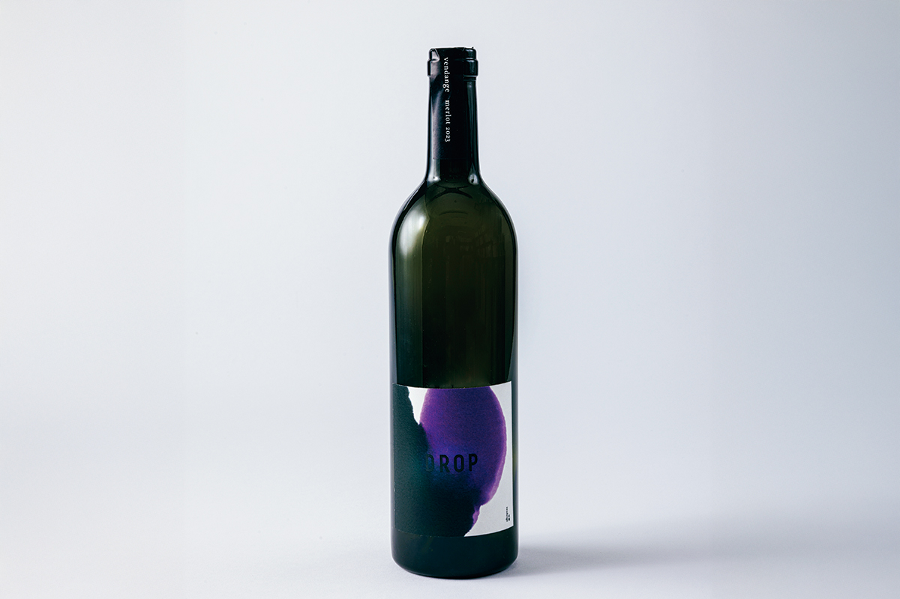
DROP
- Телефон
- не публикуется
Выпечка из «Умаядо»
На улице самурайских домов у замка Каминояма работает популярное кафе «Умаядо», где кормят обедами и поят чаем. Здесь подают подносы с овощами с поля, выращенными без химии, и десерты из тщательно подобранных продуктов. Гостиница говорит, что эта мягкая еда хорошо снимает усталость с дороги. При кафе есть лавка, а в ней кондитерская lara: её веганское печенье продают в жестяных коробках. Ингредиенты здесь стараются брать органические и местные, а в выпечке только растительные.
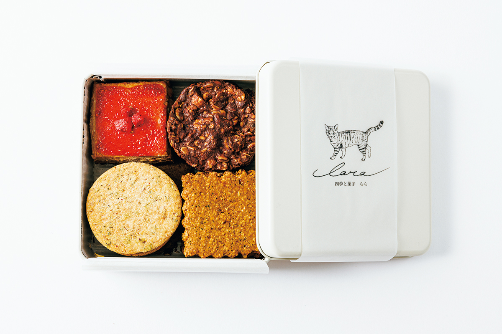
«Умаядо сётэн»
- Телефон
- +81 23-608-1922
Конняку из Нарагэ
Нарагэ когда-то был почтовой станцией на старой дороге, и здесь стоит ресторан «Конняку бансё» компании «Танно конняку». Компания всё время придумывает что-то новое из конняку, и хозяева гостиницы считают, что её обед из нескольких блюд стоит попробовать обязательно. Классический сувенир из Ямагаты отсюда же: тама-конняку, шарики конняку, пропитанные соевым соусом по семейному рецепту. Их варят на природной воде «Масуэй», а с набором, где есть и соус, их легко повторить дома.
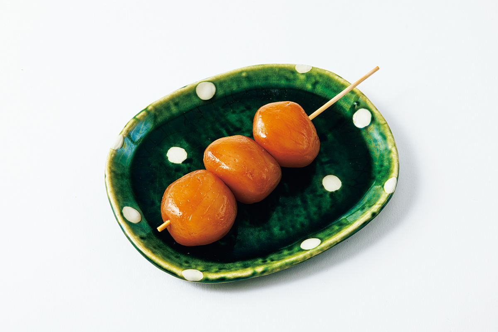
«Конняку бансё» компании «Танно конняку»
- Телефон
- +81 23-674-2351
Таро «Сатоимоя Сато ноэн»
Ещё одно лакомство, о котором знают разве что местные, это таро сатоимо. Лавка «Сатоимоя Сато ноэн» торгует таро из разных районов больше ста лет, а на своём поле выращивает его без пестицидов и химических удобрений, стремясь к «самому вкусному таро в Японии». Клубни мягкие и особенно вязкие. На поле хозяйства, кстати, нарисован индийский бог с головой слона Ганеша. Килограмм таро в земле стоил 1601 иену в 2025 году.
«Сатоимоя Сато ноэн»
- Телефон
- +81 23-631-2648
Ремёсла
Вещи, которые живут рядом с едой
Посуду в «Мэйгэцусо» подбирают так же тщательно, как продукты. Гостиница советует подносы мастера, который окрашивает алюминий растительными красителями. Его небольшой поднос похож на яркую полную луну. Металл не боится уксуса и соевого соуса, так что на него можно класть еду прямо как на блюдо. В самой гостинице еду подают в его чашах «Облачный цветок», а в номерах висят его работы.
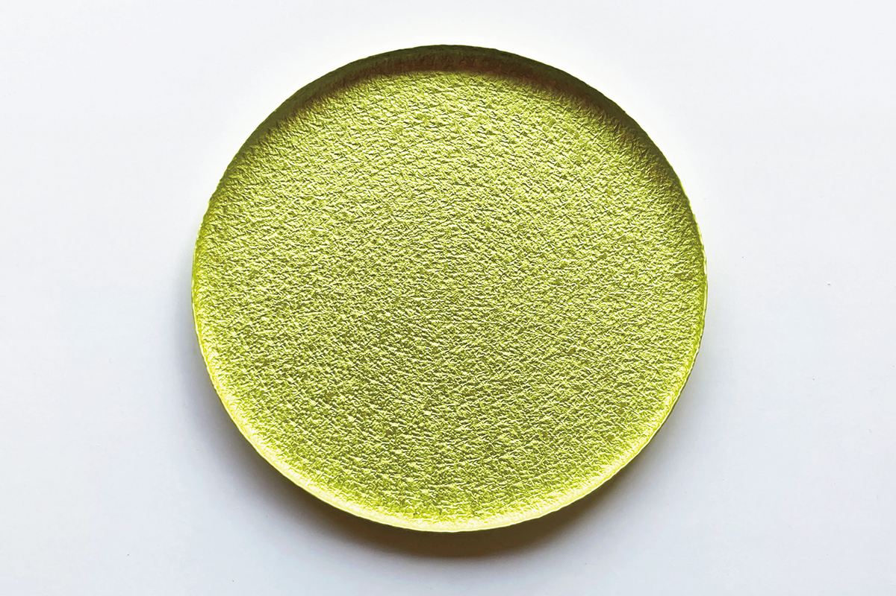
Ковры «Гассан данцу» мастера вручную вбивают петлями из льна и шерсти, и каждый получается единственным в своём роде. Рисунки взяты из природы, но в современном доме они не кажутся старомодными. Модель «Хонами Минори» получила премию Good Design Award и давно продаётся: летом лён приятно холодит ноги, а зимой между льняными нитями держится тёплый воздух. Ковёр 100 на 60 см стоил 19 800 иен в 2025 году, его продают и в лавке гостиницы.
Чугунные чайники мастерской «Сэйкодо» опытные мастера делают по старым приёмам, но со свежим взглядом. Хозяева гостиницы особенно хвалят резьбу по поверхности, которую под силу сделать только очень умелым литейщикам. Стенки у чайника тонкие, поверхность прочеканена вручную, узор выдавлен лопаткой, а служит такая вещь поколениями.
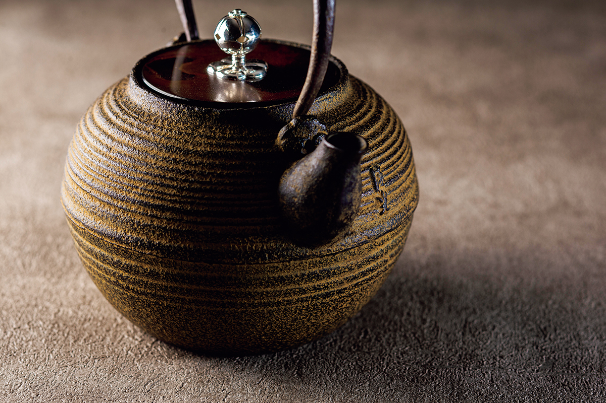
«Гассан данцу»
- Телефон
- +81 23-662-3588
- Сайт
- hozumi-rug.com
Мастерская «Сэйкодо»
- Телефон
- +81 23-622-6973
- Сайт
- seiko-do.com
Фото: Ко Миядзи, Симпэй Фукадзава.